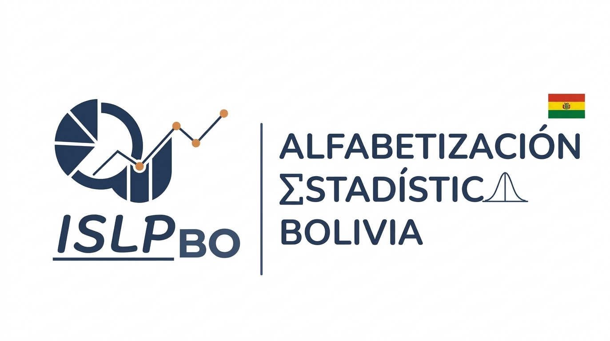

Nuevo sitio web de ISLP Bolivia
Renovamos la web con información de las tres actividades de la iniciativa: Competencia de Pósters, Paneles y Grupos de Estudio.
Aug 11, 2026
Somos la iniciativa boliviana del Proyecto Internacional de Alfabetización Estadística (ISLP). Impulsamos la Competencia Boliviana de Pósters Estadísticos, Paneles de Alfabetización, Grupos de Estudio y una red de contacto entre estadísticos, para acercar el pensamiento estadístico a estudiantes y profesionales de todo el país.

Tres frentes de trabajo con un mismo objetivo: que más personas en Bolivia piensen, lean y comuniquen con datos.
Equipos de estudiantes de primaria a universidad investigan una pregunta real y la comunican en un póster. Se realiza cada dos años y culmina representando a Bolivia en la competencia internacional del ISLP.
Charlas y paneles abiertos donde profesionales y estudiantes conversan sobre el uso de datos y estadística en problemas reales de Bolivia.
Espacios periódicos de aprendizaje colaborativo en estadística y análisis de datos, abiertos a quienes quieren profundizar más allá del aula.
Ofertas laborales, congresos y capacitaciones circulando entre quienes trabajan o estudian estadística en Bolivia, en un canal ágil de comunicación.
Novedades cortas de la iniciativa: convocatorias, resultados y avisos.
Inscripciones abiertas · 2026–2027
Postula tu investigación y forma parte del principal evento de alfabetización estadística de Bolivia. Equipos de 2 a 5 personas, guiados por un tutor, en cuatro categorías según edad.
El respaldo institucional ha variado según la edición de la competencia. Estas son algunas de las instituciones que colaboraron en distintos momentos: